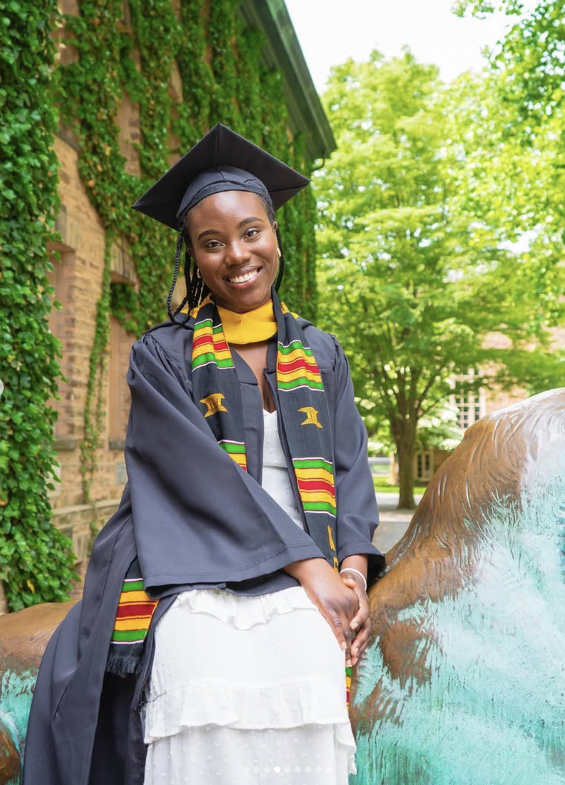
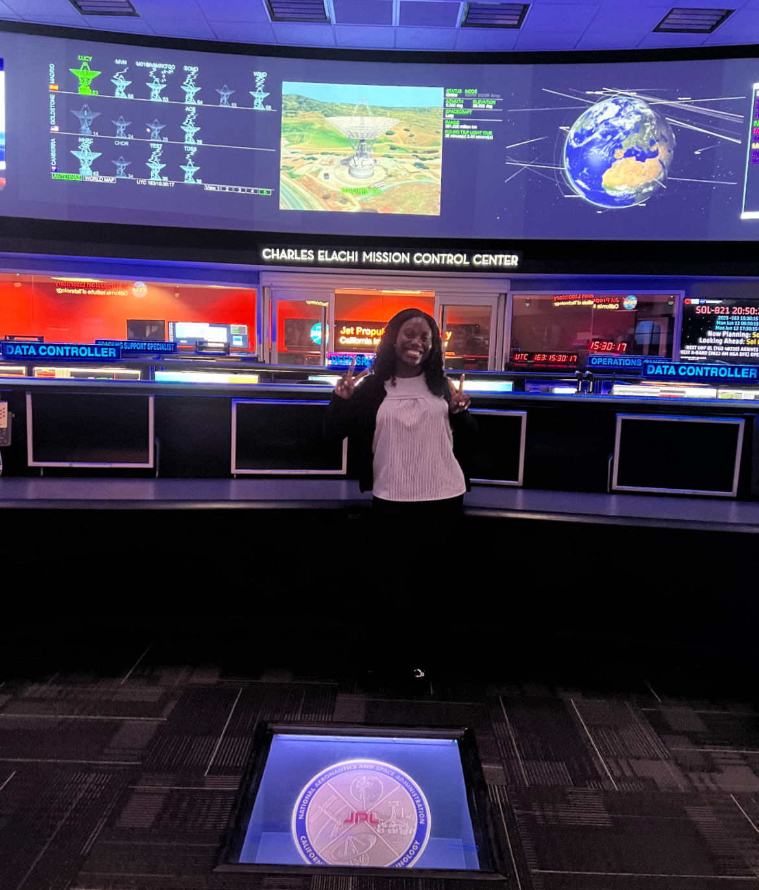
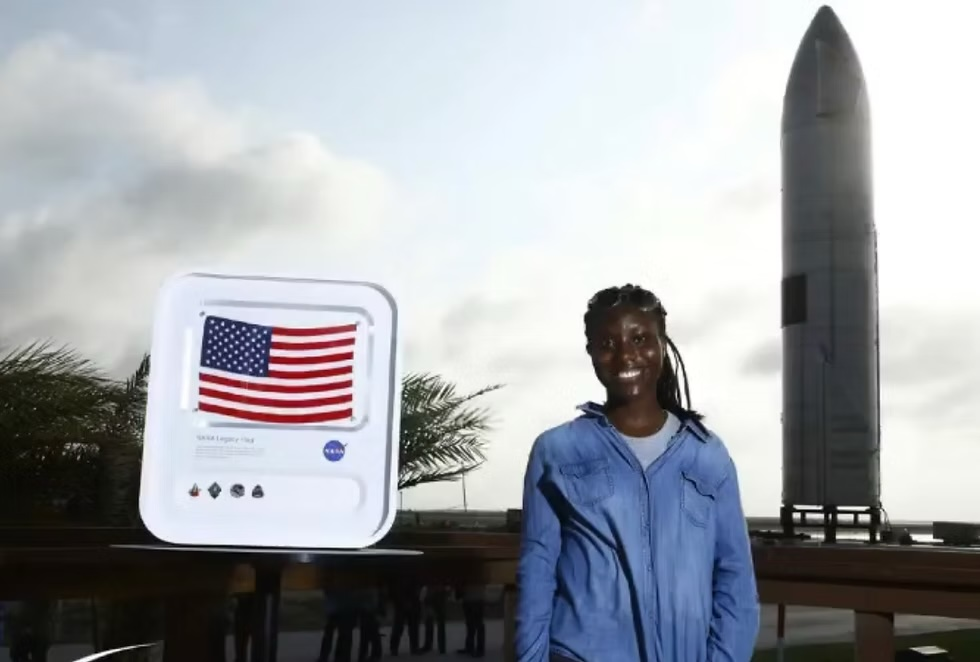

About Me
Engineer with a passion for space & locomotion.
I'm a third-year Ph.D. candidate in Mechanical Engineering at Carnegie Mellon, working in the Robomechanics Lab on design optimization, legged locomotion, and bipedal dynamics across length scales.
I earned my B.S.E. from Princeton University in Mechanical & Aerospace Engineering with a certificate in Robotics & Intelligent Systems. My research spans hip-actuated walkers, penguin-inspired bipeds, and allometric scaling laws for robotic locomotion.
When I'm not deep in CAD models, I enjoy creative writing, hand-drawn 2D animation, learning new languages (French, Japanese, Yoruba), hiking, and photography.



